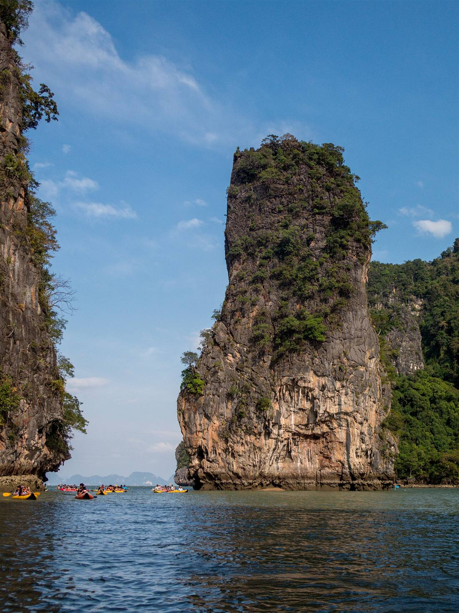
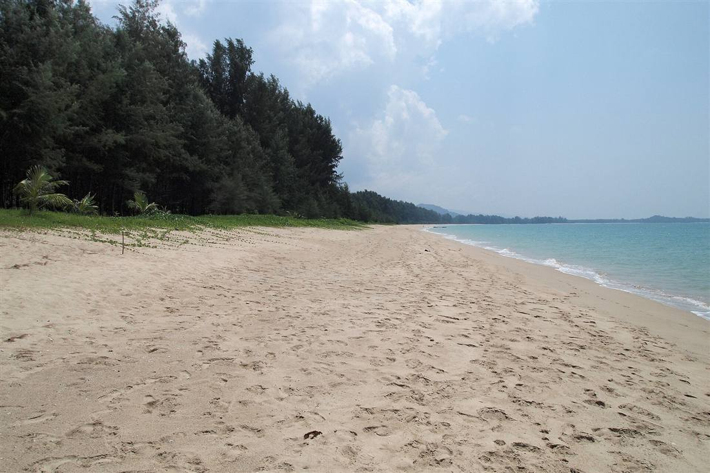
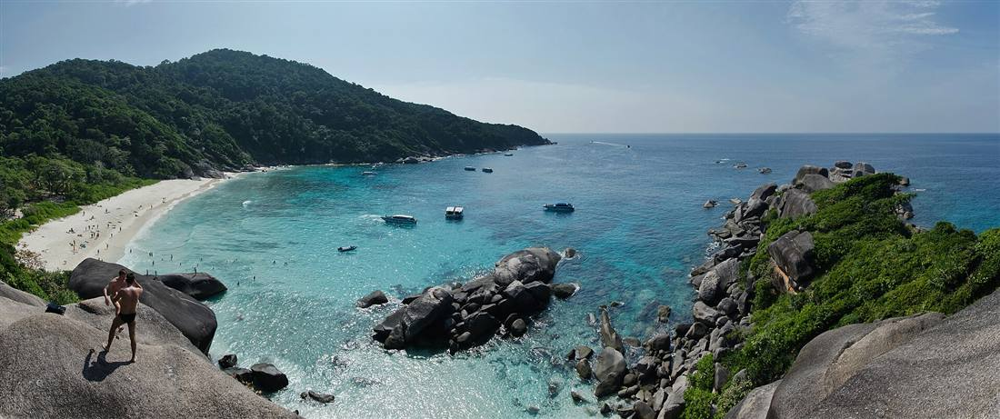
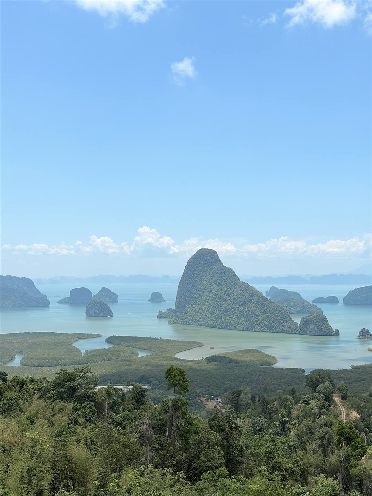
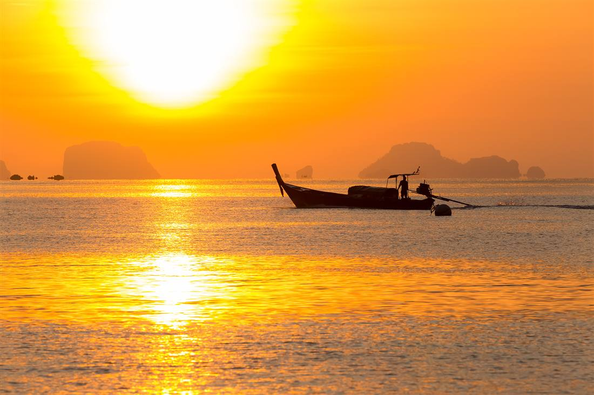
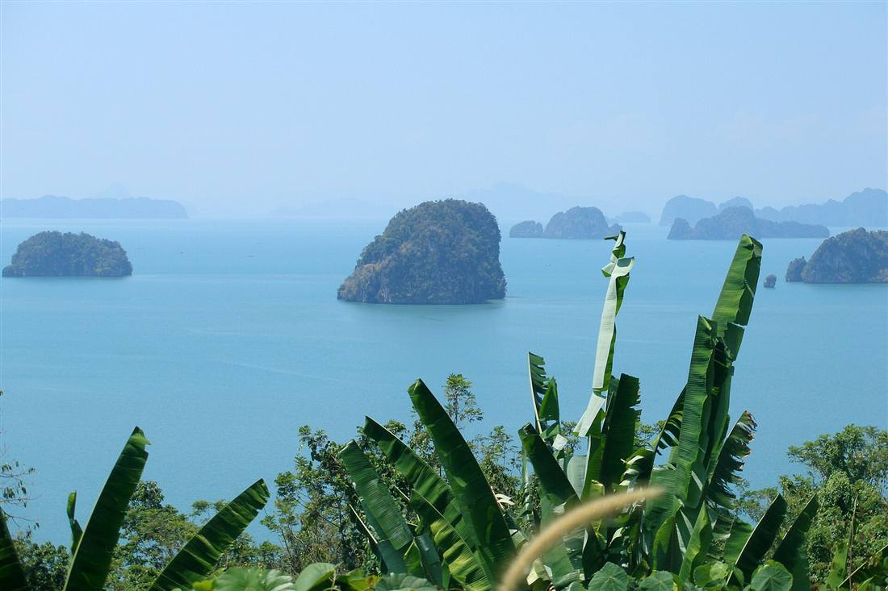
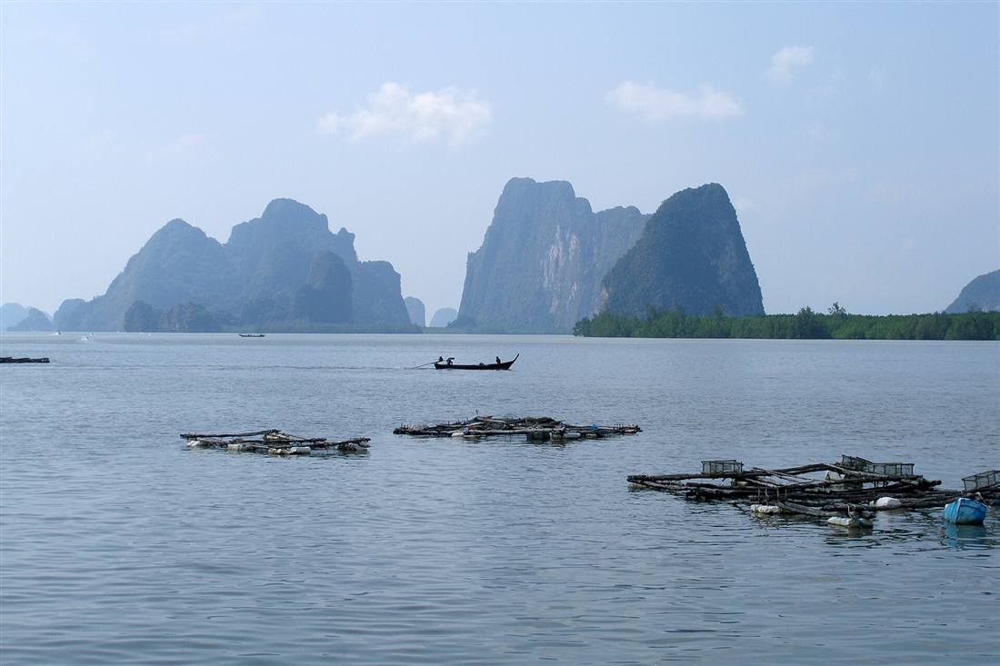
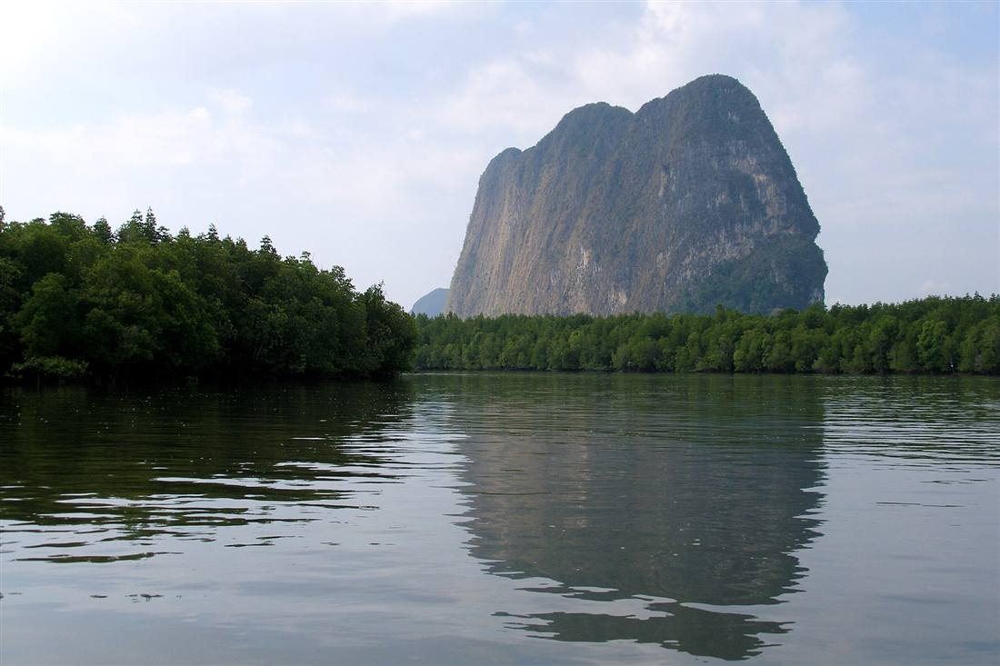
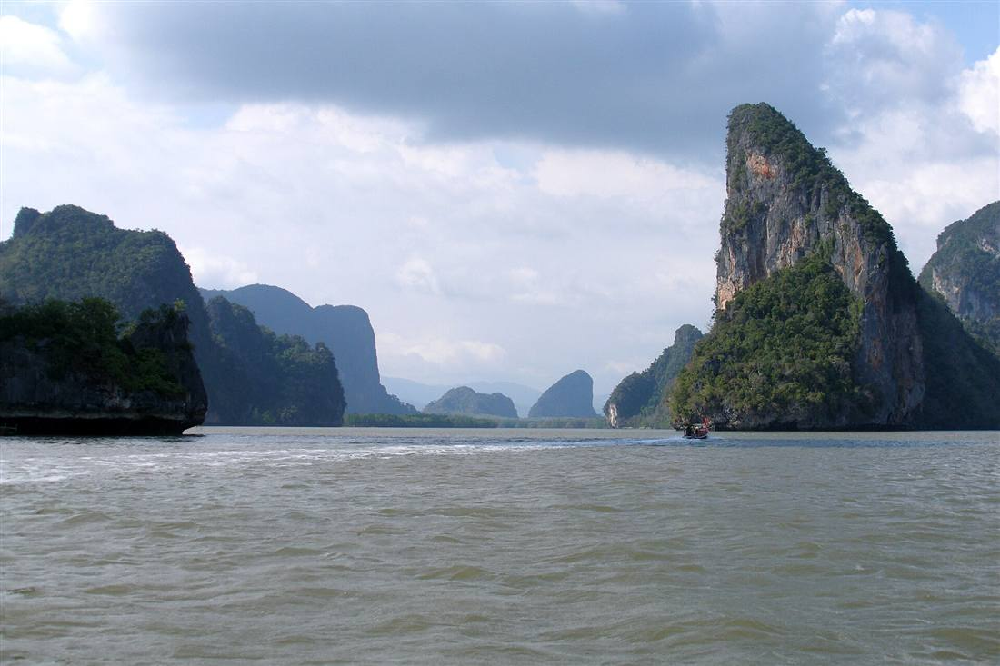

แผนเที่ยวพังงา: อ่าวพังงา, Khao Lak และสิมิลัน

พังงา เป็นจังหวัดที่เหมาะกับสายธรรมชาติอย่างมาก ถ้าต้องการทริปที่ไม่เร่งเกินไป ควรเริ่มจากโซน อ่าวพังงา เพื่อชมภูเขาหินปูนและกิจกรรมล่องเรือคายัก จากนั้นสำหรับคนที่อยากพักผ่อนริมทะเลให้ขยับไปโซน Khao Lak ซึ่งมีบรรยากาศสงบกว่า และหากต้องการทริปทะเลเชิงกิจกรรม สามารถวางแผนต่อ หมู่เกาะสิมิลัน ตามฤดูกาลเปิดอุทยาน
หัวใจสำคัญของการเที่ยวพังงาคือการบริหารเวลาและสภาพอากาศ เพราะกิจกรรมทางน้ำขึ้นกับคลื่นลมโดยตรง แนะนำให้ตรวจพยากรณ์อากาศก่อนเดินทาง และเลือกผู้ให้บริการเรือที่มีมาตรฐานเพื่อความปลอดภัย โดยเฉพาะเมื่อเดินทางพร้อมครอบครัว
Khao Lak และชายฝั่ง: บรรยากาศหินปูนกับทะเล

หากวางแผนทริปแบบ 2-3 วัน ควรแยกวันกิจกรรมทางเรือออกจากวันพักผ่อนบนฝั่งอย่างชัดเจน เช่น วันแรกเน้นล่องเรืออ่าวพังงา วันที่สองพักโซน Khao Lak และวันสามค่อยเลือกทริปทะเลที่ใช้เวลาเต็มวัน วิธีนี้ทำให้ร่างกายไม่ล้าเกินไปและลดความเสี่ยงจากการเร่งเวลาเดินทาง
Khao Lak เหมาะกับคนที่ต้องการบรรยากาศทะเลสงบกว่าโซนเมืองใหญ่ จุดเด่นคือแนวหาดยาว รีสอร์ตริมทะเล และการใช้เป็นฐานออกทริปสิมิลันในฤดูกาลที่อุทยานเปิด หากเดินทางจากภูเก็ตควรเผื่อเวลาอย่างน้อย 1.5-2 ชั่วโมงตามสภาพจราจร
อีกจุดที่ควรคำนึงคือช่วงเวลาเรือเข้า-ออกและความพร้อมของเด็กหรือผู้สูงอายุ ถ้าร่วมทริปหลายช่วงวัย แนะนำเลือกเรือที่มีอุปกรณ์ความปลอดภัยครบและมีเวลาพักระหว่างกิจกรรมมากพอ จะช่วยให้การเที่ยวพังงาทั้งทริปปลอดภัยและสนุกมากขึ้น
หมู่เกาะและทริปทะเลลึก (รวมแนวสิมิลัน)

หมู่เกาะสิมิลันเป็นเขตอุทยานทางทะเลที่เด่นเรื่องน้ำใส หาดทรายขาว และโขดหินแกรนิต จุดสำคัญคือควรตรวจช่วงเปิดอุทยานและสภาพทะเลก่อนจอง เพราะทริปนี้ใช้เวลาเต็มวันและขึ้นกับคลื่นลมมากกว่าจุดเที่ยวบนฝั่ง
เสม็ดนางชี: จุดชมวิวพาโนรามาอ่าวพังงา

จุดชมวิว เสม็ดนางชี เป็นอีกไฮไลต์ที่นักท่องเที่ยวเลือกใส่ในทริปพังงา เพราะสามารถมองเห็นแนวภูเขาหินปูนและผืนน้ำได้แบบกว้างมาก เหมาะกับทั้งสายถ่ายรูปและคนที่ต้องการสัมผัสบรรยากาศธรรมชาติแบบสงบ หากเดินทางด้วยรถพร้อมคนขับจะช่วยให้ควบคุมเวลาแวะจุดต่าง ๆ ได้ง่ายขึ้น โดยเฉพาะวันที่วางแผนเที่ยวหลายจุดในวันเดียว
เสม็ดนางชีช่วงเช้า: เทคนิคไปให้ทันแสงแรก

ช่วงเวลาที่คนนิยมที่สุดคือก่อนพระอาทิตย์ขึ้นประมาณ 45-60 นาที เพื่อจับภาพแสงเช้าและหมอกบางเหนืออ่าวได้สวยที่สุด ควรเตรียมเสื้อคลุมบาง ๆ น้ำดื่ม และเช็กสภาพอากาศล่วงหน้า 1 วัน รวมถึงเผื่อเวลาเดินทางจากภูเก็ตหรือโซนที่พักให้มากพอ เพื่อหลีกเลี่ยงความเร่งรีบในช่วงเช้ามืด
หากพักในภูเก็ตและต้องการชมแสงแรก ควรออกจากที่พักตั้งแต่ช่วงตี 4-5 โมงตามตำแหน่งที่พักจริง เพราะถนนขึ้นจุดชมวิวและรถรับส่งขึ้นเนินอาจมีคิวในวันหยุด กล้องควรเตรียมขาตั้งหรือโหมดถ่ายแสงน้อยไว้ล่วงหน้า
เสม็ดนางชี: มุมถ่ายรูปยอดนิยม

ถ้ามาเป็นคู่รักหรือครอบครัว แนะนำให้เริ่มจากจุดชมวิวหลักก่อน แล้วค่อยขยับไปมุมรองที่คนไม่หนาแน่นมากเพื่อได้ภาพหลากหลาย ทั้งภาพวิวกว้างและภาพใกล้ที่เก็บรายละเอียดของภูเขาหินปูน การจัดคิวมุมแบบนี้ช่วยลดเวลารอและทำให้ทริปสนุกขึ้น โดยเฉพาะในวันหยุดยาวที่นักท่องเที่ยวเยอะ
มุมที่ควรเก็บคือภาพพาโนรามาเต็มอ่าว ภาพบุคคลหันหลังมองวิว และภาพแนวตั้งที่ให้ภูเขาหินปูนเป็นฉากหลัง ควรหลีกเลี่ยงการยืนใกล้ขอบทางลาดหรือราวกั้นเกินไป โดยเฉพาะเมื่อมากับเด็กเล็ก
เสม็ดนางชี + คาเฟ่ + ที่พักใกล้จุดชมวิว

ทริปที่ใช้งานได้จริงคือขึ้นเสม็ดนางชีช่วงเช้า จากนั้นลงมาแวะคาเฟ่หรือร้านอาหารท้องถิ่น แล้วค่อยไปต่อ Khao Lak หรือกลับภูเก็ตตามแผน หากต้องการพักต่อแถวพังงา ควรเลือกที่พักใกล้เส้นทางหลักเพื่อประหยัดเวลาเดินทาง และทำให้จัดโปรแกรมวันถัดไปได้ยืดหยุ่นมากขึ้น
ถ้าเน้นคาเฟ่วิวดี ควรตรวจเวลาเปิดปิดก่อนเดินทาง เพราะบางร้านเปิดตามฤดูกาลหรือมีช่วงปิดปรับปรุง ส่วนที่พักวิวอ่าวมักเต็มเร็วในวันหยุดยาว การจองล่วงหน้าช่วยให้จัดเวลาชมพระอาทิตย์ขึ้นได้ง่ายกว่าเดินทางไปกลับจากภูเก็ต
เสม็ดนางชีหน้าฝน: เที่ยวกรีนซีซันแบบไม่พลาดวิว

ช่วงหน้าฝนของพังงาให้บรรยากาศเขียวสดและเมฆสวยมาก ถ้าบริหารเวลาให้ดีจะได้ภาพวิวที่มีมิติไม่แพ้ฤดูอื่น แนะนำวางแผนแบบยืดหยุ่น ตรวจเรดาร์ฝนก่อนออกเดินทาง และเผื่อเวลาเดินทางมากขึ้นเล็กน้อย เพื่อหลีกเลี่ยงการรีบขับในถนนเปียก
กรีนซีซันควรเลือกแผนที่ยกเลิกหรือเลื่อนเวลาได้ง่าย เช่น ไปช่วงหลังฝนหยุดหรือเลือกคาเฟ่/ร้านอาหารเป็นจุดพักสำรอง หากมีฝนหนักต่อเนื่องไม่ควรฝืนขึ้นจุดชมวิว เพราะทางลาดและลานจอดอาจลื่นกว่าปกติ
เสม็ดนางชีสำหรับครอบครัวและผู้สูงอายุ

หากเดินทางหลายช่วงวัย ควรเลือกช่วงเช้าหรือเย็นที่อากาศไม่ร้อนมาก จัดเวลาแวะพักเป็นระยะ และวางแผนจุดอาหาร/ห้องน้ำให้ชัดเจนก่อนเริ่มทริป วิธีนี้ช่วยให้ทุกคนเที่ยวได้สบายขึ้น โดยยังเก็บภาพวิวหลักของเสม็ดนางชีได้ครบตามเป้าหมาย
สำหรับผู้สูงอายุควรใช้รถรับส่งขึ้นจุดชมวิวแทนการเดินขึ้นเนินเอง และควรแจ้งคนขับล่วงหน้าหากต้องการจอดใกล้ทางเข้า จุดสำคัญคือไม่ควรจัดต่อกับทริปเรือที่เหนื่อยมากในวันเดียวกัน เว้นแต่ทุกคนพร้อมและมีเวลาพักเพียงพอ
แนวทางจัดเส้นทางที่ใช้งานได้จริง
- ทริปวันเดียว: อ่าวพังงา + จุดพักผ่อนใกล้เคียง
- ทริป 2 วัน: เพิ่ม Khao Lak เพื่อพักริมทะเลแบบสบาย
- ทริป 3 วันขึ้นไป: วางสิมิลันเป็นวันแยกเฉพาะกิจกรรมทะเล
แหล่งที่มา: TAT – Phang Nga Bay, TAT – Khao Lak Coast, TAT – Mu Ko Similan National Park, TAT – Samet Nangshe Viewpoint